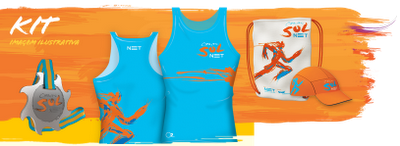

vamo, vamo, vamo…
Ex-sedentário
7 Treinos completos – Pela primeira vez na vida
47 years
Hoje foi o setimo treino consecutivo. Bati 5km em 42 minutos …..
TO FELIZ PRA C*********
q delicia…q medo…kkkkkkkkkkk
47 years
by Andrea Carla
in Ex-sedentário
ontem treinei com o alex por 30 minutos na chuvaaaaaaaaaaaaaaaa…kkkkkkkkkkkkkkkk…no começo fiquei com medo depois foi uma delicia…kkkkkkkkkkkkkkkkkkk…desistir nunca…vamo…vamo…vamo…
Agindo como criança
57 years
by Alecão
in Ex-sedentário

Como relatei no post da São Silvestre, em 2010 eu me redescobri e uma redescoberta foi a de querer me tornar criança novamente. No sentido da felicidade pelas coisas simples. Nós adultos complicamos demais quando o assunto é encontrar a felicidade. Buscamos o álcool (para citar), compras, status, com o objetivo de alcançar a felicidade. E no final das contas é bem complicado. As crianças não, se divertem com uma caixa de papelão. Acho que a corrida me trouxe um pouco disso, a diversão por si só. Veja quantos relatos de corredores se divertindo fazendo treinos sem relógio. Eu particularmente, as vezes esqueço de iniciar, ou parar o cronômetro. É a alegria se materializando apenas por curtir o momento.
No último domingo a tarde, levei meu filho para brincar na quadra do lado de casa, levamos a bola de basquete. A cesta sempre foi alta para o MaurÃcio e as tentativas anteriores sempre foram frustrantes, mas neste domingo, a força dele já era suficiente para a bola entrar na cesta. Catei o celular e vamos filmar:
A alegria dele de ter feito as cestas era o equivalente ao meu de ter terminado a São Silvestre. Continuamos a jogar basquete e alguns meninos apareceram na quadra, “tio posso jogar?”, e deixei, formamos 2 times, 3 crianças (maiores que o Mauô) contra eu e o Mauô. Depois de 10 minutos, aparece um vizinho meu que falou: “Você está louco de tentar acompanhar as crianças”. Desprezei o comentário e continuei, depois de uns 30 minutos, comecei a sentir dor no fÃgado. Hehehehe, pensei comigo, peguei pesado… Mas me diverti muito, correndo e tentando roubar a bola… “Mas tio, você é grande, você não pode fazer isso”, esta frase me fez pensar um pouquinho. Porque adulto não pode se comportar como criança? E continuei rindo e brincando. Foi muito divertido. Pena que no meu atual estado “kilogramétrico”, fica difÃcil continuar a brincadeira por muito tempo.
Segunda, fiz uma caminhada de quase 5 Km por 60 minutos, voltando do trabalho, com roupa social e mochila das costas.
Terça, na hora do almoço, aceitei o chamado da Moça e fui para “rodar” na quadra. As crianças foram junto, e alternei entre trotes e brincadeiras com a bola de basquete e corridas com as crianças. O meu sobrinho Pedro (11 anos) estava junto, perguntei se queria que o inscreve-se na próxima corrida infantil e ele topou. Olha eu influênciando… hehehehe. Estar com a famÃlia foi muito bom, nem percebi que estava rodando (que normalmente considero chato).
Quarta, como diz a Ivana, com tanta água caindo, ficamos de molho! Acabei indo pro shopping comer… hahahaha
Ontem, caminhei voltando do trabalho por 30 minutos e depois a Moça me chamou para caminhar, avisei, tem uma nuvem preta lá fora, acho que ela não me escutou e continuou a vestir a roupa de caminhada, me troquei também e fomos para a rua. Com 10 minutos de caminhada, umas gotas do céu começaram a cair, continuamos …”Não vai ser uma chuvinha que vai nos desanimar”… Mas derrepente. O mundo começou a cair sobre nossas cabeças. Era balde d’água sobre a cabeça, era impossÃvel continuar e voltamos. Mas a esta altura estávamos longe de casa. Depois vir a saber que a chuva alagou vários pontos do ABC. A Andrea queria se abrigar, mas eu tinha receio de parar e o corpo esfriar, já estávamos completamente molhados. Os pingos duros (como diz a Moça) doiam a cabeça, enquanto que a água impedia a gente de enchergar a calçada. Foi punk…. E MUITO DIVERTIDO. Abria os braços e falava: “Manda mais água!”
Me senti como criança, quando minha mãe deixava brincar na chuva (que era raro, hehehe). A sensação foi muito boa. Quase chegando em casa completamente encharcado. Vimos uns moleques jogando futebol em um gramado “empiscinado”. Comentei com a Moça: “Olha lá como é divertido”. Foram apenas 30 minutos de caminhada dentro d’água, mas pareceu uma eternidade. Em casa, torci a roupa, coloquei no varal e corri para um banho quentinho e demorado. Amei tudo isso!
Hoje em dose dupla
27 years
Acabei me empolgando na hora do almoço e sai pra caminhar. Resultado, 40 minutos bem caminhados e mais de 2km
Agora a noite mais um treino legal, choveu cerca de 15 minutos dos 33 debaixo de chuva . NÃO TEM TEMPO RUIM MAIS PRA MIM !!! rssssssss
http://www.mapmyrun.com/routes/view/26939150
http://www.mapmyrun.com/routes/view/26954222
P.S Não contei os 20 minutos de caminhada da empresa até a estação da Mooca. hehehehehehehe
Treino de hoje – 12/01/2011
47 years
Treino leve hoje para não me desgastar bem no meio da semana.
Volta aos treinos .. e agora é definitivo
57 years
Bom pessoas, eu treinei .. parei .. treinei .. parei .. e agora voltei em definitivo, minhas metas são perder peso, baixar tempos, correr provas e terminar inteiro.
Abaixo segue a evolução dos meus treinos que se iniciaram no ultimo sábado e tem sido diários.
Data       Tempo Andando Tempo Correndo   Tempo Total   Peso    Percurso     Roteirização
08/01/2011       45            5            50        103     3.64km     http://www.mapmyrun.com/routes/view/26836248
09/01/2011       20            40            60        103      6.38km     http://www.mapmyrun.com/workout/35266056/
10/01/2011 Â Â Â Â Â Â 20 Â Â Â Â Â Â Â Â Â Â Â 0 Â Â Â Â Â Â Â Â Â Â Â Â 20 Â Â Â Â Â Â Â 102 Â Â Â Â Â Esteira
11/01/2010       0           34:50          34:50       102      4.38km     http://www.mapmyrun.com/routes/view/26893240
Hoje pela manhã me pesei e ja estou com 101,5 . Ate o inicio de Fevereiro VOU estar com 98kg. Hoje ja vesti uma calça social que ao menos uns 3 anos não vestia !!!!!  🙂 🙂 🙂 🙂  To me sentindo ÓTIMO !!!!!!!
Estreia da Moça no mundo das corridas
47 years
by Alecão
in Ex-sedentário
Pois é, a Moça precisa de uma prova para se adentrar no mundo das corridas. E resolvi inscreve-la (sem ela saber) na corrida/caminhada de 5Km do Circuito Sol Net (etapa SP) que será no dia 16/01/2011.
Vou tirar um monte de foto para ela fazer um senhor post. 🙂
até corri………uhu…..
47 years
by Andrea Carla
in Ex-sedentário
hoje treinei UMA HORA…uhu…até dei umas corridinhas intermediarias…q delicia……vamo…vamo…vamo…
depois do último dia do ano ……
87 years
by Andrea Carla
in Ex-sedentário
retomei minhas atividades hoje…caminhei 40 minutos, pretendo treinar todos os dias…vou conseguir…
vamo…vamo…vamo…
último dia do ano
37 years
by Andrea Carla
in Ex-sedentário
gente, o cansaço foi tanto q só consegui postar hoje…….afiiiii…mega fora d forma…kkkkkkkkkkkkkkkkk.
foi emocionante assistir o alex na sao silvestre e eu naquele vai e vem tb treinei…ebaaaaaaaaaa…isso tudo na compania da paula( namorada do thiago ) ela é super legaaaaaaaalllllllllllllllllllllll.
Além do treino e ficar o tempo todo com a adorável paula, muito feliz d ver o alex chegar e o companheirismo do thiago…menino d oooooooooooouuuuuuuuurrrrrrrrrrrrrooooooooooooooooooooooooo….bjsssssssssss
.jpg "DSC01721 (576x1024)")
.jpg "DSC01783 (1024x576)")
.jpg "DSC01831 (1024x576)")
.jpg "DSC01841 (1024x576)")
.jpg "DSC01892 (576x1024)")
.jpg "DSCN5696 (1024x768)")


Últimos comentários